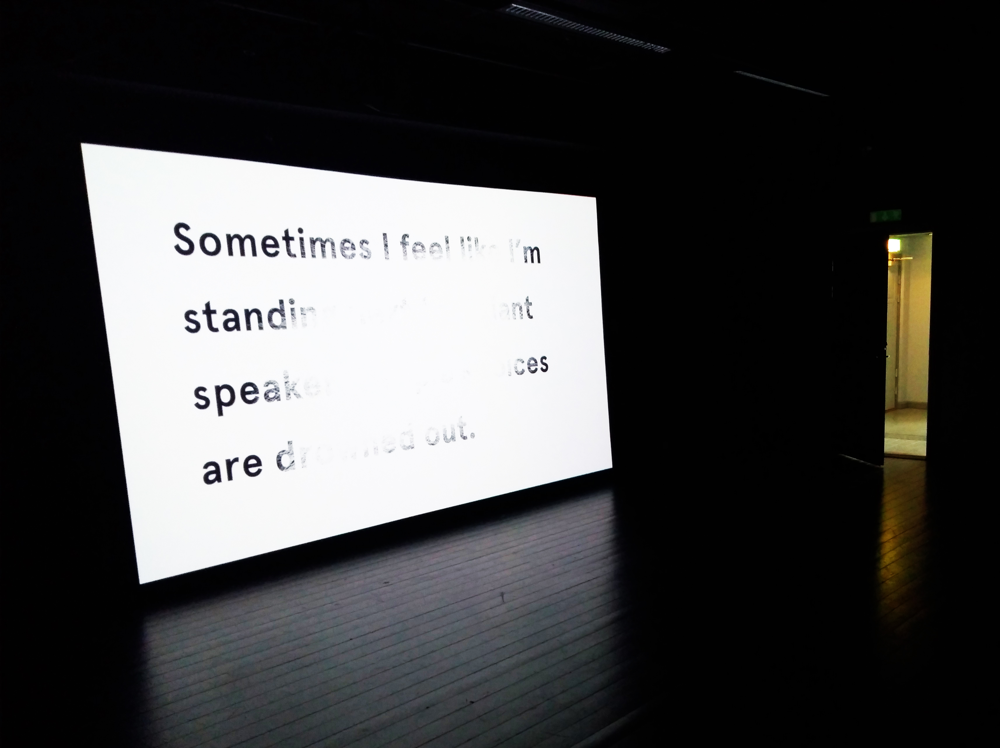

Twenty Ongoing Tones is an audio-visual project based around resynthesized tinnitus sounds, created from interviews with twenty people who have tinnitus. These volunteers described their tinnitus in detail, along with information about how it began, and how it makes them feel. Using these interviews as a reference, the tinnitus sounds of each person were recreated, and the results of this recreation presented as a sequence of twenty tones, each lasting exactly one minute, providing a brief window into the internal sound world of another person. Accompanying the tinnitus sounds are oscilloscope-based visuals and fragments of the interviews.
This installation was developed in the Inter Arts Center Malmö between January 31 and February 8 2018, and shown as part of Intonal Festival 2018
